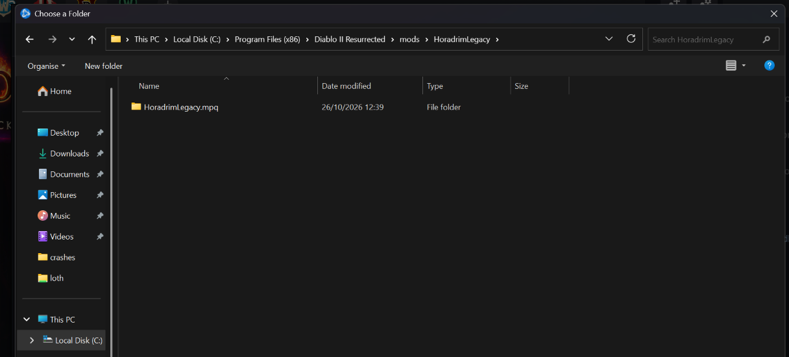
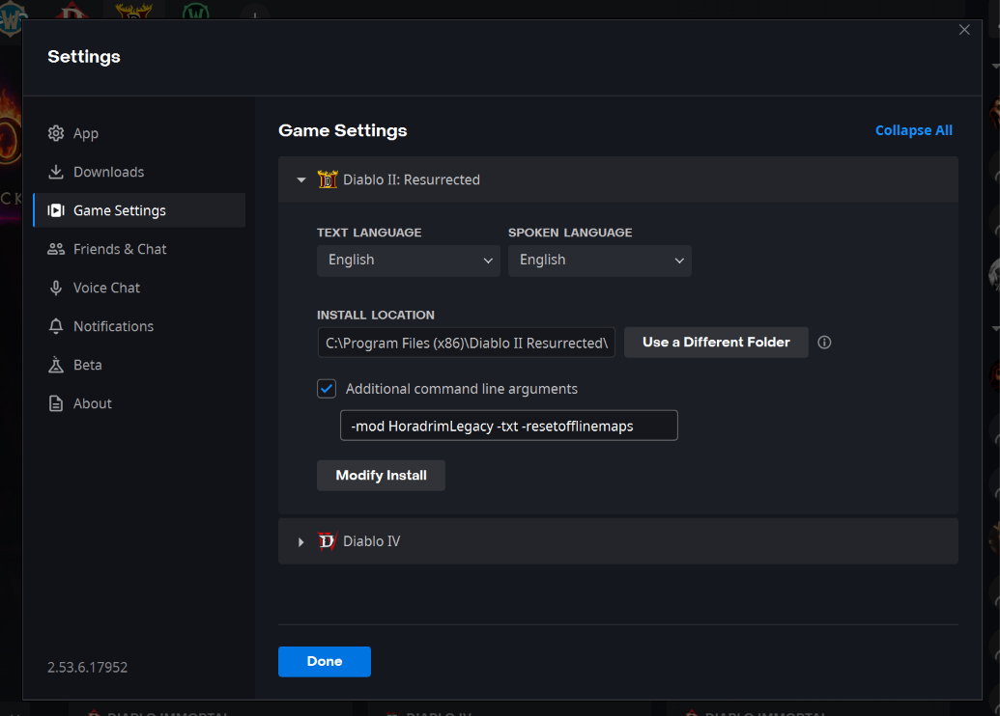

Download HoradrimLegacy-0.3.0.zip with the button above, then:
- Unzip it into
modsOpen your Diablo II: Resurrected folder and unzip into
mods(create it if it isn't there).Battle.net
C:\Program Files (x86)\Diablo II Resurrected\modsSteam
Check: 1 the path endsC:\Program Files (x86)\Steam\steamapps\common\Diablo II Resurrected\modsmods\HoradrimLegacyand 2 it holds one item,HoradrimLegacy.mpq(a folder, not a file).
12Battle.net shown; Steam looks the same. Tap to enlarge. - Set the launch options
Battle.net
In the Battle.net app's Settings: 1 Game Settings, 2 Diablo II: Resurrected, 3 tick Additional command line arguments and paste:
-mod HoradrimLegacy -txt -resetofflinemapsSteam
Right-click the game › Properties › Launch options:
All three are required:%command% -mod HoradrimLegacy -txt -resetofflinemaps-resetofflinemapsgives every offline game a new map.
123Battle.net Settings. Tap to enlarge. - Play offline
Start a new offline hero, or bring in an offline Reign of the Warlock hero. Modded heroes keep their own save folder.
Use HD graphics: the legacy graphics (the G key) are not supported.


Or see GitHub for more and the automatic installer. Close D2R first, then run it:
- Windows, in PowerShell:
irm https://github.com/Guitaraholic/legacy-of-the-horadrim/releases/latest/download/install.ps1 | iex - Linux or Steam Deck, in a terminal (Desktop Mode):
curl -fsSL https://github.com/Guitaraholic/legacy-of-the-horadrim/releases/latest/download/install.sh | bash
The installer finds Battle.net or Steam D2R, checks the package and replaces only mods/HoradrimLegacy, leaving saves untouched. If D2R is open, close it before retrying. If D2R is not found, set D2R_DIR to its folder and retry. Then set the launch options in step 2.
Steam Deck
In Desktop Mode, run the Linux installer above, then set the Steam or Battle.net launch options in step 2.
Controller
Connect a controller before launch; D2R switches layouts automatically. The expanded inventory and mercenary slots support controllers.
Updating
Back up your saves (Windows: Saved Games/Diablo II Resurrected/mods/HoradrimLegacy). Run the installer again to update. For a manual update, delete mods/HoradrimLegacy and unzip the new release into mods; leftover files can break game text. The mod folder must contain only HoradrimLegacy.mpq. Saves are stored separately and carry over.
If your heroes come from a LotH release with the 10×8 inventory, empty row 8 on each one before updating to 12×7.
Uninstalling
Before uninstalling, prevent item loss:
- Empty inventory columns 11–12 and rows 5–7 on every character.
- Empty stash columns 11–13 and rows 11–12.
- Remove every mercenary's rings, amulet, belt, gloves and boots.
Then remove the launch options and delete mods/HoradrimLegacy. Items that exist only in LotH, such as its uniques, set items, Horadric reagents and Stone Fragments, are lost either way.
Didn't work? Help →